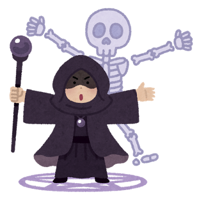

開いているページのトップへスルスルとジャンプします！
下の紙飛行機の男の子をクリックしてください。
上の寝てる男の子へジャンプします！
あいつに届け～
| こんな感じで | 奇数の行に |
| 色が | つきます。 |
| これで | 今どこを |
| 見ているか | わかりやすい！ |
長いテーブルの場合、どこの行を見ているかわかりにくくなるので、背景に色をつけることで見やすくすることが出来る！
魔法使いをクリックすることで言葉が消えるよ！
クリックして消してみよう！
エラーメッセージ表示時に便利かも！
